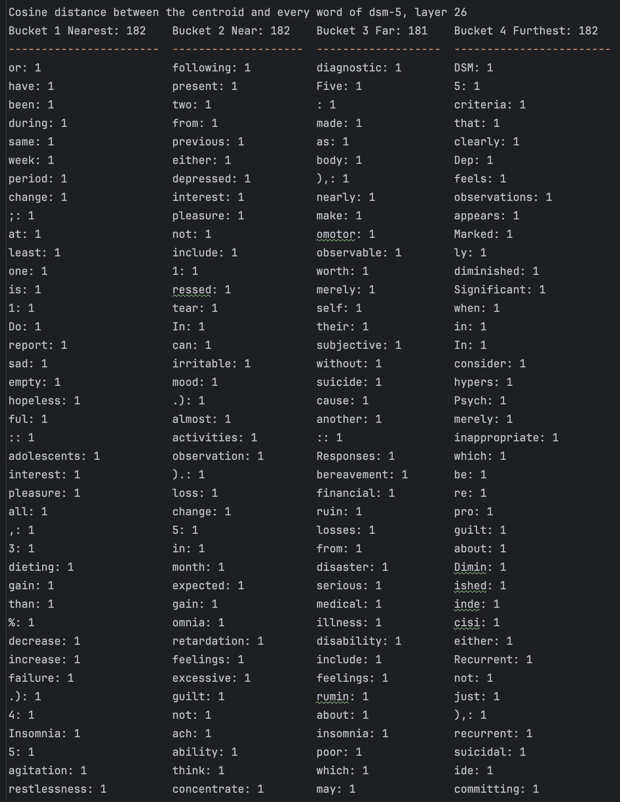
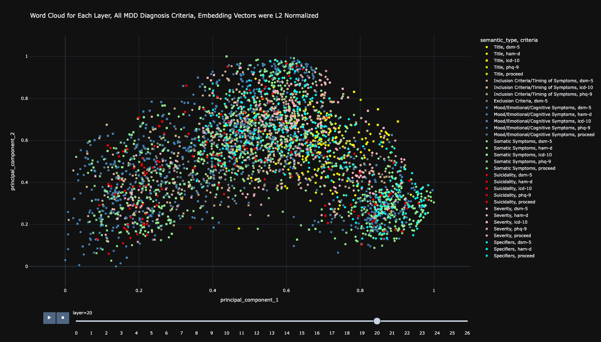
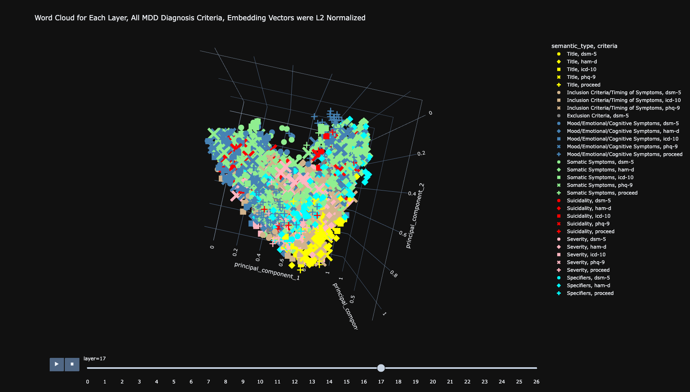
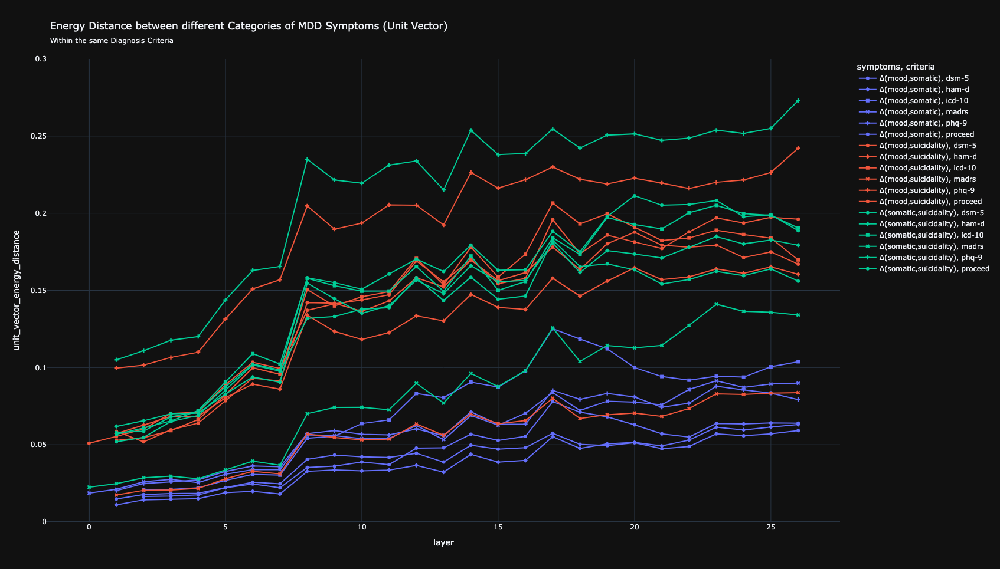
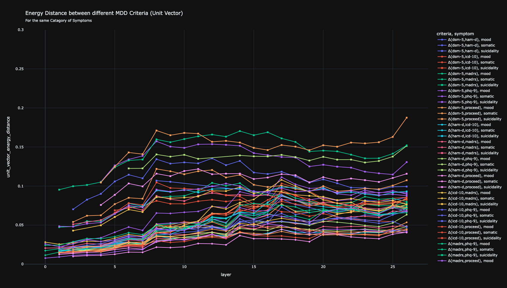

Selected Mechanistic Interpretability Tools Showcase
At Precision Neurotherapeutics Lab, we analyze LLM residual streams from textual descriptions of depression symptoms. To navigate the high-dimensional structure of these residual streams, we have developed a suite of mechanistic interpretability tools. Our interactive data visualizations showcase these tools in action, using residual stream activations retrieved from google/gemma-2-2b, a model with an embedding length of 2304 across 26 transformer layers.
Vector Distances Between Emotions
We visualized the L2 Euclidean and Cosine distances of word embeddings in the input layer before they went through the transformer layers. We found that words with similar meanings were sometimes close together in the high-dimensional embedding space, although not always.
Vector Distances relative to the Centroid of Residual Stream
We found the residual stream centroid and its neighbors for each transformer layer and MDD diagnostic scale. Interestingly, subject-specific nouns are the dominant nearest neighbors in the last two layers under both cosine and Euclidean distance metrics. This suggests that the last two transformer layers in google/gemma-2-2b are identifying the main entities or actors in the context.

Word Cloud Visualization
We performed 2D and 3D Principal Component Analysis on the residual streams word by word. (Note: This interactive visualization is large and contains animation. Click to interact in a new tab.)
 
Energy Distances
Quantitative analysis using Energy Distance revealed statistically significant clustering of descriptions within the same symptom categories (p < 0.05 for all comparisons), where within-category distances were 50% smaller than between-category distances in specific layers. This clustering was especially prominent in layers 19-24 of the 26-layer model. These findings suggest that measuring statistical distances of residual streams in high-dimensional embedding space could enable automated detection and severity assessment of depression symptoms from naturalistic language samples. (Note: Click to inspect detailed findings in a new tab.)
 
Click to expand text comparisons between the closest and furthest pairs.
Overall Furthest Text: Δ(Somatic Symptoms, Suicidality Symptoms) | PHQ-9
PHQ-9 Somatic Symptoms:
Sleep disturbances: Difficulty falling asleep at night, waking up frequently and struggling to
get back to sleep, or conversely, sleeping excessively beyond what feels normal or necessary.
Fatigue and low energy: Persistent tiredness throughout the day, feeling physically drained or
depleted, lacking the energy to complete routine tasks or activities.
Appetite changes: A noticeable decrease in appetite or loss of interest in food, or
alternatively, eating more than usual, often without feeling genuinely hungry.
Psychomotor changes: Physical movements and speech that have become noticeably slowed down—to
the point where others might observe it—or the opposite pattern: heightened restlessness,
fidgeting, an inability to sit still, or moving around considerably more than typical.
PHQ-9 Suicidality Symptoms:
Experiencing thoughts about death, wishing you were dead, or having thoughts about harming
yourself.
Overall Closest Text: Δ(HAM-D, PROCEED) | Somatic Symptoms
HAM-D Somatic Symptoms:
Sleep Difficulties
Some people experience trouble falling asleep at the beginning of the night, ranging from
occasional difficulty to a persistent problem. Others find their sleep is disrupted in the
middle of the night—they feel restless, wake repeatedly, and have difficulty settling back down.
A third pattern involves waking very early in the morning, well before intended, and being
unable to return to sleep despite wanting to.
Changes in Movement and Energy
A person may notice a general slowing down—their thoughts seem to move sluggishly, their speech
becomes slower or more effortful, and even simple activities feel labored. This can range from
subtle hesitation to profound immobility where engaging in conversation or daily tasks becomes
extremely difficult.
Alternatively, some people experience the opposite: a restless, agitated state where they cannot
sit still and feel compelled to move, often accompanied by underlying anxiety.
Physical Symptoms of Anxiety
Anxiety can manifest throughout the body. This includes digestive upset or indigestion, a racing
or pounding heart, tension headaches, shortness of breath, or urinary frequency. These physical
signs can range from mildly noticeable to so severe they interfere with daily functioning.
Digestive and Appetite Changes
Appetite may diminish noticeably, sometimes accompanied by a heavy or uncomfortable sensation in
the abdomen and constipation. These symptoms can be mild or significantly affect eating and
digestion.
General Physical Symptoms
The body may feel heavy—particularly the limbs, back, or head. There may be diffuse aching,
especially in the back, along with a pervasive loss of energy and a tendency to tire easily from
minimal effort.
Changes in Sexual Function
Interest in sex may decrease or disappear. For those who menstruate, cycle irregularities may
occur.
Preoccupation with Health
Some individuals become increasingly focused on their bodies, ranging from heightened
self-awareness of physical sensations to persistent worry about illness, to an irritable
insistence that something is medically wrong, and in severe cases, fixed beliefs about having a
serious disease despite reassurance.
Weight Changes
Unintentional weight loss may occur, from barely perceptible to clearly visible and
significant.
PROCEED Somatic Symptoms:
Physical discomfort and bodily changes
People may experience unexplained aches, pains, or other physical complaints. Changes in
appetite are common, leading to noticeable weight gain or loss. Interest in sexual activity
often diminishes or disappears entirely.
Sleep disturbances
Sleep patterns become disrupted in various ways. Some people sleep far more than usual,
struggling to get out of bed or napping excessively during the day. Others find their sleep
fragmented and unrefreshing, waking frequently throughout the night. Many experience difficulty
falling asleep or staying asleep, lying awake for hours.
Observable behavioral changes
Emotional expression may shift noticeably. Crying spells can occur frequently, sometimes without
clear triggers. In more severe cases, people may speak very little or stop talking altogether.
Facial expressions often appear flat, sad, or emotionally muted. Movements and speech may slow
down considerably, with people appearing to move through molasses.
Diminished vitality
Even simple daily tasks feel like they require enormous effort. A pervasive sense of physical
weakness sets in. Energy levels drop substantially, making it hard to initiate or complete
activities. Persistent fatigue lingers regardless of how much rest someone gets.
About
This showcase presents tools developed by Fangyi Zhu and Ajay Subramanian at the Stanford Precision Neurotherapeutics Lab for our ongoing research into the mechanistic interpretability of LLM depression representations.